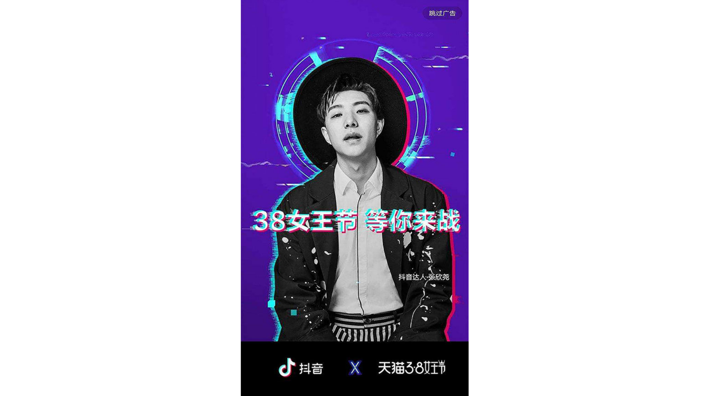
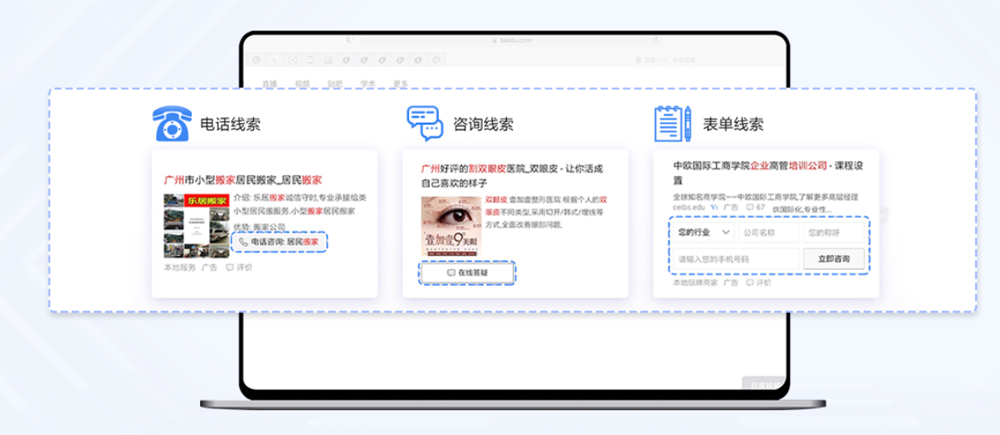
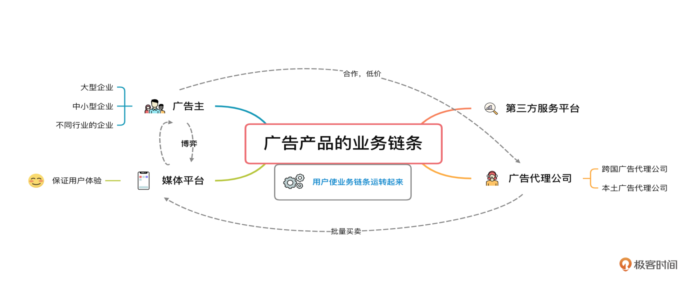
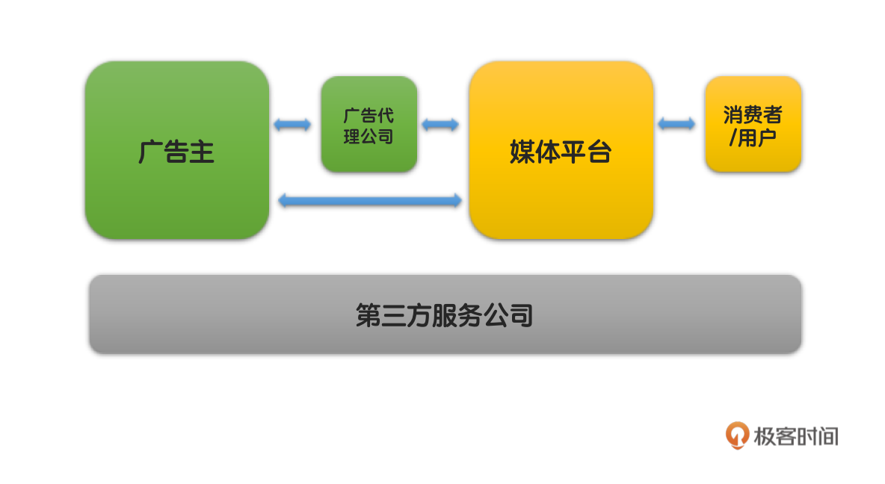

- 00 开篇词 作为一名互联网人，你为什么必须了解广告产品？.md
- 01 业务逻辑：广告产品的前世今生和商业模式是怎样的？.md
- 02 业务链条：广告主、媒体、第三方等分别如何看待广告产品？.md
- 03 头部玩家：从BAT到跳动的字节，广告产品有哪些变化与发展趋势？.md
- 04 产品体系：互联网大厂的广告产品存在哪些共性和区别？.md
- 05 变现模式：什么样的产品适合采用广告模式变现？.md
- 06 产品路线：大厂和小厂的广告产品发展路线有什么区别？.md
- 07 计价与效果（上）：如何制定合理的计价方式？.md
- 08 计价与效果（下）：如何制定合理的效果评估指标？.md
- 09 效果优化：如何一步步从提升曝光量深入到提升销量？.md
- 10 流量优化：如何兼顾广告收入和用户体验？.md
- 11 物料生产：如何满足广告主的创意需求？.md
- 12 精准定向：如何建立一个成熟的用户标签体系？.md
- 13 转化优化：互联网大厂如何利用算法优化广告效果？.md
- 14 程序化交易：程序化交易是否可以提升广告效果？.md
- 15 需求调研：广告产品潜在需求的调研流程是怎样的？.md
- 16 平台建设：如何从0到1建立一个完整的广告产品平台？.md
- 17 职业发展：新人入行，如何判断自己是否适合做广告产品？.md
- 18 团队建设：如何搭建一个高效的广告产品团队？.md
- 19 跨团队合作：产研团队和销售端、媒体端、市场端如何合作？.md
- 20 产品运营：不同发展阶段如何制定业务目标和运营策略？.md
- 21 广告产品彩蛋：课程答疑与推荐书目.md
- 结束语 你想要成为什么样的互联网广告产品人？.md
02 业务链条：广告主、媒体、第三方等分别如何看待广告产品？
你好，我是郭谊。
在开始今天的课程前，请你先闭上眼睛，回想一下你今天你看到的广告，是在哪儿看到的？哪个公司的广告？你对这些广告抱有什么样的情绪和态度呢？接下来我想请你带着这些问题来学习这节课的内容。
上节课我们了解了互联网广告行业及广告产品的发展历史和商业模式，但如果想要正确认识和深入了解广告产品，我们还需要深入挖掘它的业务链条。
在这个业务链条中我们需要了解：
- 业务涉及的各方；
- 各个不同角色的立场及需求；
- 角色之间的金钱、数据以及其他事物的流转。
我们可以简单地把广告产品的业务流程绘制如下。从左到右，依次是广告主、广告代理公司、媒体平台、广告主的目标消费者也就是媒体平台的用户，下方横跨的则是各种各样的第三方服务公司。

下面我们就来依次介绍一下，广告产品业务链条中的各个角色。
广告主
广告主是广告产品的最终需求方。他们为了向目标消费者推广自己的品牌和产品信息，向媒体平台购买广告产品，通过这些媒体平台向消费者投放广告。广告主可以根据规模、行业分为各种不同的类别，而你所开发的广告产品，是针对哪一类广告主的，这一点很关键。
大型企业
一般来说，那些用户访问量大、位置显眼、尺寸大、创意空间丰富的广告产品，首先要针对的是大型企业的广告主，比如抖音的开屏广告 。
用户打开抖音App时，整个手机屏幕都被开屏广告所占据。虽然现在都有“跳过广告”的按钮，但是前2-3秒你肯定还是看到了这个广告。而且，开屏广告不光可以选择纯展示，也可以选择点击之后跳转到广告主的落地页；既可以放静态图片，也可以放4秒的动图、5秒的短视频，甚至在短视频播放完之后，如果用户没有选择跳过，还可以继续播放10-60秒的长视频广告。

除了移动端的开屏广告，像我们在上一讲中提到的富媒体广告、视频贴片广告等，也是大型企业的广告主的“盘中餐”。当然，这些广告产品的价格一般来说也是相对昂贵的。只有既有海量用户曝光需求，又有雄厚实力的大型企业才会经常购买这类广告产品。所以这类广告产品就是针对这样的企业开发设计的。
中小型企业
相对于大型企业，中小型企业对于广告的尺寸、形式和创意空间不那么在意。他们更加注重的是广告的实际效果，说白了就是广告究竟能不能为他们带来更多的销售额和利润。针对这些广告主，我们在设计开发广告产品时，要更加注重的不是广告位的尺寸、呈现，而是如何提升广告产品的效果指标。
像我们上一讲中提到过的搜索关键词竞价广告，最主要的购买者就是中小型广告主。这类广告产品没有视频贴片广告和开屏广告那样高昂的价格，而且我们上节课也提到了搜索广告因符合用户需求，用户定位更加精准，包容性也更强。因此这类广告产品对中小型企业来说，可谓是经济实惠的上上之选。这也是谷歌、百度等以搜索服务作为主要产品的公司，商业崛起之路上第一桶金的来源。
值得注意的是，并不是只有中小型企业才会投放以效果为导向的广告。实际上随着宏观经济形势的变化和市场竞争激烈程度的上升，大型企业在效果广告上的投放比例也越来越高了。但和中小型企业不同，大型企业购买搜索关键词竞价广告，很多情况下是作为对于自身品牌和产品的公关保护手段。
不同行业的广告主
除了按照企业规模，我们还可以从另一个角度，把广告主分成汽车、日化、3C数码、金融、电商、游戏等等不同的行业。不同行业广告主的需求，有共性，也可能有特殊的行业需求。
例如汽车和保险行业的广告主，需要高效地收集潜在消费者的联系方式。我们叫做销售线索或者leads。百度曾经为这些行业的广告主设计开发过一种叫做“捷径”的表单样式的广告产品，用户可以直接在广告位上输入自己的手机号码等联系方式。广告主的销售团队收到这些联系方式后，就可以打电话联系这些用户，进一步介绍和推荐产品。后来这种广告产品逐渐进化成覆盖更多广告主行业的“线索通”。

关于广告主，我们还要了解一点。那就是所有广告主，无论企业规模大小、属于什么行业，本质上都是希望从购买的广告产品中获取最大化的商业价值的。所以，站在广告主的角度，他们其实是希望我们设计的广告产品能够承诺最终结果的，也就是商品的销售收入。
苹果早期就曾经找百度谈过，希望按照最终的苹果商品销售金额进行分成，但是遭到了百度的拒绝。那么，百度为什么要拒绝这种广告产品的购买方式呢？让我们先来分析一下媒体平台的立场。
媒体平台
媒体平台指的就是我曾经工作的百度、腾讯、阿里这样的平台。在上一讲中，我们提到过这些平台一方面为用户提供丰富多样的产品及服务，而且其中很多都是免费的；另一方面作为媒体为广告主提供广告产品。广告收入是这些平台重要的甚至是最主要的收入来源。我们如果从事广告产品设计和开发的工作，绝大多数也是在这些媒体平台的广告产品团队内来进行。
站在平台的立场上，作为用户和广告主的中介，我们在设计广告产品的时候，一方面要考虑如何为公司带来更多的商业价值，另一方面还要考虑如何平衡用户体验，因为用户是我们能够为广告主提供广告产品，并从中获取广告收入的根本所在。从为公司带来更多商业价值的角度来说，采取直接和广告主进行销售金额分成，对我们来说是非常不利的，根本原因是：我们根本控制不了从广告投放到用户购买广告主商品的整个过程。
媒体平台与广告主的博弈
这里我想通过业务流程的两个环节来详细说明，我们为什么不建议和广告主进行销售金额分成。
在广告投放前，我们一般只会要求广告主按照具体广告产品的要求，提供广告展示的相关创意素材也就是俗称的“物料”。这些要求包括文件格式（文字、图片、图文、视频等）、文件大小等。而物料创意一般是由广告主自己解决的，我们只是按照国家相关法规政策和公司要求进行上线前审核。不同的创意对于广告效果肯定有不同的影响。
一般来说，用户必须点击广告后，跳转到落地页，才能浏览广告主商品的详细信息并进行购买。这些落地页都是由广告主进行设计和管理的，我们只要求广告主提供合法和可用的链接而已。对于这个环节，我们的控制力就更弱了。
所以，媒体平台怎么能够为广告主的销售而负责呢？
大一点儿的、有较高知名度的媒体平台都非常珍视自己的“羽毛”，不可能采取杀鸡取卵的方式去营收。因此，这些媒体平台，一般都是不会同意为广告主的销售而负责的，媒体平台最多也就是同意按照广告点击数收取广告费用。因为他们首先要保证用户的体验。
当然，在业界可能也有一些没有那么大用户量和知名度的媒体，为了获得广告主的青睐，而同意这种为最终销售负责的方式。那这样做，媒体平台就能稳稳地把广告主抓牢吗？
答案是否定的。因为大的媒体平台都不接受这种广告产品购买形式，而广告主首先要保证的还是自己的品牌和产品推广信息可以“广而告之”，所以有一定购买实力的广告主肯定会优先考虑大的媒体平台。因此，现在的广告产品购买方式，在广告主和媒体平台之间，从根本上来说，是一种双方博弈的结果。
广告代理公司
虽然说大的媒体平台不接受让广告产品为最终销售负责，但是大广告主还是有办法买得更划算。这里就要提到广告产品业务链条中的另外一个关键角色：广告代理公司。所谓广告代理公司，顾名思义，就是作为广告主的代表，来和媒体平台打交道，进行广告产品的采购和投放的公司。
中国境内的广告代理公司，一般可以分为两类。
跨国广告代理公司
第一类是跨国广告代理公司，例如WPP、电通安吉斯、阳狮、宏盟等。我们经常把这些跨国广告代理公司统称为4A。实际上，4A一词源于美国，是“美国广告协会”The American Association of Advertising Agencies的缩写，在国内逐渐成为外资广告公司的统一简称。
这些广告公司一般是跨国集团。在进入中国之初，因为我国相关政策的要求在中国境内成立合资公司。他们的优势是拥有悠久的历史、自己的广告方法论和国际客户。这些国际品牌的广告主，在进入中国之后，很多也就继续采用跨国广告代理公司的国内合资公司的服务。
本土广告代理公司
第二类广告代理公司，是本土广告代理公司。例如蓝标集团、广东省广、利欧集团、昌荣集团等。我们通常把这些本土公司简称为local。
本土广告代理公司有两种诞生方式：
- 一种是从电视广告等传统领域拓展业务而来的，例如昌荣集团；
- 一种是和中国互联网广告共同成长的，以互联网广告为主要对象的广告公司，例如曾经被称为中国互联网广告“黄埔军校”的好耶。这种广告公司，最初其实是相当强势的。
接下来，我们就以好耶为例来了解一下本土广告代理公司。好耶成立于1998年，而中国第一支互联网广告是1997年投放的，所以好耶相当于是和中国互联网广告同时起步的。2004年，好耶的营业收入达到2亿多元，利润超过了2000万元，几乎占据当时互联网广告行业的半壁江山。虽然好耶的时代已经落幕，但是整个中国本土广告代理行业，因为多年来的耕耘，至今整体上仍不弱于跨国广告代理公司。
广告代理公司如何帮助广告主更划算地购买广告产品呢？
因为媒体平台在广告产品的售卖政策上，有类似批发的优惠，也就是你购买的广告越多，广告产品的单价越便宜。有实力的广告代理公司，可以把几个或者更多广告主的广告购买需求捆绑在一起，向某个媒体平台进行集中采购，获取最大限度的折扣以及其他优惠。
因为广告产品具有限时性，所以没办法压库存。某个时段卖出不去就浪费了，所以媒体平台为了鼓励大量批发，针对广告代理公司也有专门的价格优惠，例如广告代理公司采买一律按照刊例价的五折起，广告主直接采买六折起。广告主一算账，觉得还是托广告代理公司去买更便宜。因此很多企业都会委托广告代理公司去购买广告产品。这样一来，就有了广告代理公司的生存空间。当然，广告代理公司也不是所有广告主都接，也要看广告主的预算大小。
广告代理公司除了集中采购之外，还会为广告主提供一系列的服务，例如收集整理媒体平台的广告产品信息，给广告主出营销方案，走合同等等。所以只要广告主出得起钱，就可以享受广告代理公司的各项服务。
当然，广告代理公司的服务的主要对象也是大型企业，因为绝大多数中小型企业的广告主一般是没有这个预算的，所以他们通常是自己直接购买和投放广告。
广告代理公司的立场，介于广告主和媒体平台之间。因为他们除了服务广告主，也要和大的媒体平台保持良好的关系，毕竟市场上有那么多大大小小的跨国或本土的广告代理公司可以选。很多广告代理公司的金牌销售，自己出来单干，只要有好的客户关系，往往也能做起来一个新的代理公司。
同时，广告代理公司在做广告产品的购买和组合方案时，必然不会只考虑广告主的利益，而是会综合考虑自己的利润。在有多个都能被广告主所接受的方案的前提下，广告代理公司倾向于选择自身利润最大化的方案。
因为广告业务链条中存在这些复杂的关系，所以各个角色内部都有专门的团队进行对接。一般来说，广告主端的负责团队是市场部，其中又可能按照广告产品的分类分为展示类广告、搜索类广告、视频类广告等不同的小组。广告代理公司和广告主市场部对接的团队是客户部，和媒体平台对接的团队是媒介部，同时还有策略部、创意部等分别负责营销方案和创意的产出，有专门的预算负责人进行总体的预算和利润审核。
媒体平台针对大型广告主，一般有专门的直客团队负责，针对广告代理公司则有渠道团队负责，直客团队加上渠道团队形成媒体平台内部的广告销售团队，这个广告销售团队只负责直销。另外，媒体平台还设置了渠道管理团队，负责外部渠道代理商合作伙伴的拓展与支持，以触达成千上万的中小型广告主。
第三方服务公司
广告产品的业务链条中，还有一个不能忽视的角色，就是第三方服务公司。所谓第三方，就是指这些公司既不属于甲方广告主，以及作为甲方代言人的广告代理公司，也不属于乙方媒体平台，而是作为第三方提供相对独立的各种服务。
最典型的就是广告数据监测公司。虽然媒体平台会提供广告曝光、点击等效果数据，但是大的广告主出于自身立场和审计需求，一般都会找第三方广告数据监测公司进行数据监测。业界最老牌的广告数据监测公司，例如Admaster和秒针。前几年这两家已经合并了，不过这个领域还有一些移动互联网时代的后起之秀可以选择。
除了数据监测公司，还有许多其他领域的第三方公司活跃在广告产品相关方向上，例如创意智能资产管理及决策优化公司、全栈广告技术方案公司等。这里需要强调的是，程序化交易的相关角色，例如ADX、需求方平台DSP、供给方平台SSP等。
重点回顾
在这一讲中，我们学习了广告产品行业的业务链条，包括广告主、广告代理公司、媒体平台、第三方服务公司等主要的业务角色。了解了广告主、媒体平台、第三方等不同角色的分工与立场：

- 广告主可以按照规模和行业分类，不同规模和行业的广告主首选采购的广告产品有所区别；
- 媒体平台既需要平衡广告收入与用户体验，又要与广告主博弈，现有的广告产品售卖方式是这种博弈的结果；
- 广告代理公司分为跨国与本土公司，侧重于代表广告主的利益，但是实际上最终首要维护的还是自身的收入与利润；
- 第三方服务公司面向以上角色，提供不同方向种类繁多的产品与服务，因为其相对独立的立场而得到广告主和广告代理公司的信任，但是也因为它整个业务链条中的定位，所以获取的收入相比于其他角色较少。
广告产品的整个业务链条保持运转，需要各方的配合。一个成功的广告产品离不开广告主的关注、广告代理公司的资源整合，也离不开第三方服务公司提供的数据、技术等各方面的支持，当然更离不开媒体平台巨大的流量。
实战演练
最后，你还记得吗？在本讲的一开始，我给你展现了一张简略的业务图示。学完这节课，你可以动动脑筋、收集一些资料，在广告主、广告代理公司、媒体平台、第三方服务公司模块里，尝试填入具体的公司名称？期待在留言区看到你的成果，我们下节课再见！

© 2019 - 2023 Liangliang Lee. Powered by gin and hexo-theme-book.